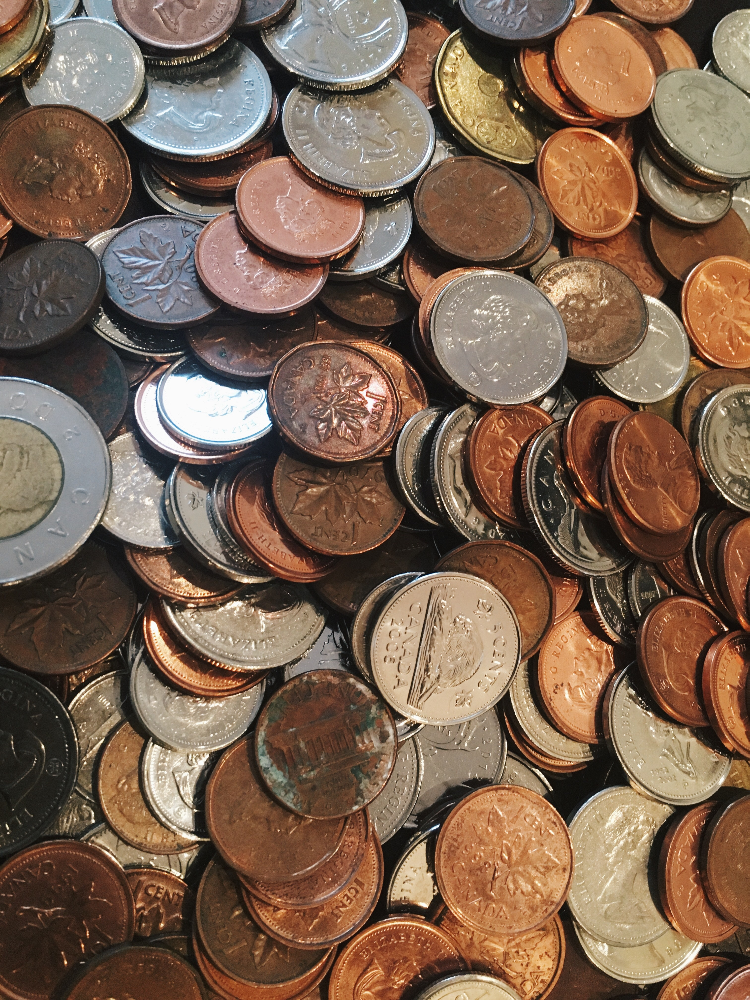

최초로 구현된 가상화폐입니다. 발행 및 유통을 관리하는 중앙권력이나 중간상인 없이, P2P 네트워크 기술을 이용하여 네트워크에 참여하는 사용자들이 주체적으로 화폐를 발행하고 이체내용을 공동으로 관리합니다. 이를 가능하게 한 블록체인 기술을 처음으로 코인에 도입한 것이 바로 비트코인입니다.
비트코인을 사용하는 개인과 사업자의 수는 꾸준히 증가하고 있으며, 여기에는 식당, 아파트, 법률사무소, 온라인 서비스를 비롯한 소매상들이 포함됩니다. 비트코인은 새로운 사회 현상이지만 아주 빠르게 성장하고 있습니다. 이를 바탕으로 가치 증대는 물론, 매일 수백만 달러의 비트코인이 교환되고 있습니다.
비트코인은 가상화폐 시장에서 현재 유통시가총액과 코인의 가치가 가장 크고, 거래량 또한 안정적입니다. 이더리움이 빠르게 추격하고 있지만 아직은 가장 견고한 가상화폐라고 볼 수 있습니다.